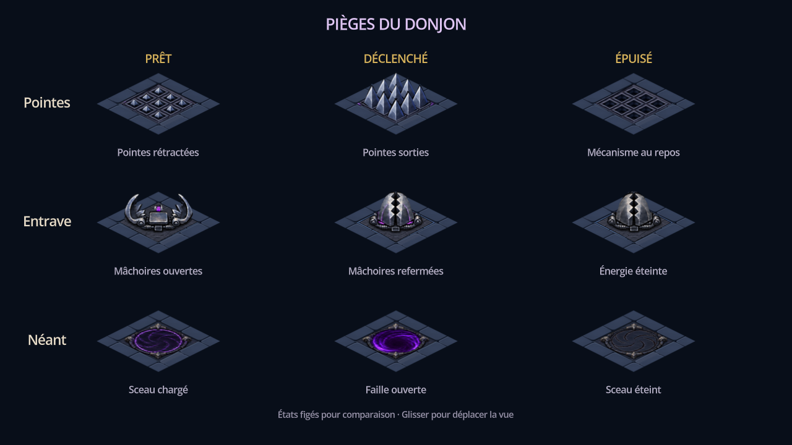
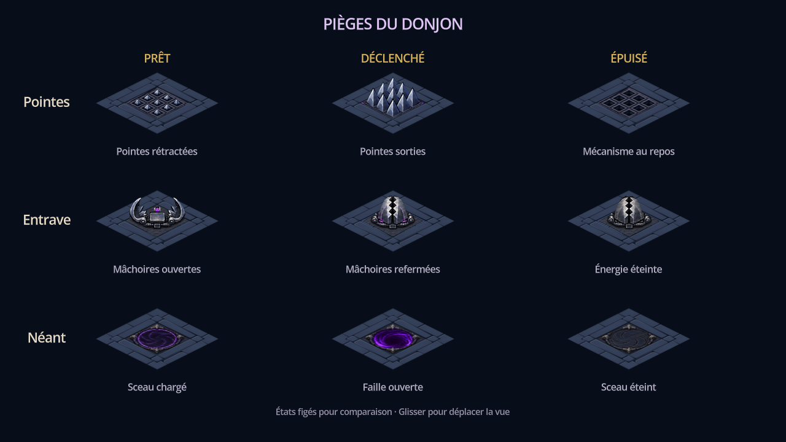

Le carré validé, appliqué aux trois pièges
Le logement central occupe désormais 68 % de la largeur de la case. Les pierres restent rectangulaires et utilisent le matériau du dallage voisin. Les mécanismes ont été agrandis dans les mêmes proportions sur les trois axes.
Captures natives de Godot. Le wireframe a été validé ; le rendu peint présenté ici reste soumis à votre appréciation.

La scène DungeonTraps présente les neuf états avec leurs textures intégrées.
Raccords avec le dallage
Ancien rendu conservé pour comparaison

Vérification
Douze pierres conformes au wireframe validé ; quinze couches de pièges ; 136 autres régions et deux pages d’atlas préservées. Les 220 428 pixels de bord contrôlés restent identiques au dallage B1. Les mécanismes gardent un cadrage commun entre leurs états, avec une marge transparente vérifiée.
Import et captures : code de sortie 0, aucune erreur sur stderr. Le contrôle natif des pièges passe ses onze scénarios. Atlas des pièges : 512 × 1024, toujours 2 Mio RGBA ; le PNG passe de 185 182 à 214 176 octets.
Limites : les mâchoires d’Entrave restent une représentation 2,5D de la peinture existante. Les superpositions avec l’acteur provisoire ont été examinées visuellement, sans comparaison exhaustive de profondeur. Pas de test sur téléphone ni de profil de performances.
Wireframe validé · Référence figée · Géométrie intégrée · Contrôles de l’export · Scénarios natifs